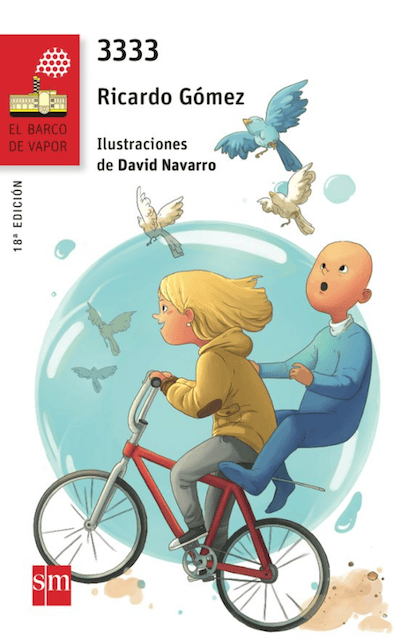
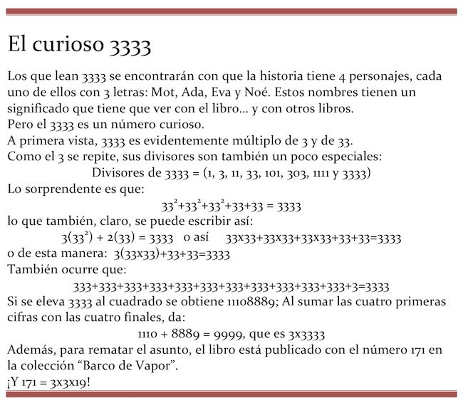

¡Has desenrollado el pergamino secreto! 
*
3333

Decidí situar esta historia en el lejano 3333 por razones matemáticas, pensando además que es una fecha fácil de recordar, aparte de capicúa.
Pero al imaginar el mundo de 3333 tenía que crear escenarios, cachivaches, máquinas y estilos de vida muy diferentes de los actuales.
Poco a poco, fui creando este mundo, ayudándome de un diccionario para quienes vivimos en una época tan antigua como la nuestra. Es un TRIccionario, como corresponde a la época de 3333.
Ahí va...

PEQUEÑO TRICCIONARIO DE 3333
Bici (en realidad, bicicleta): Máquina de transporte muy antigua que se mantenía en equilibrio de milagro y que chupaba la fuerza física de las personas a cambio de llevarles de un lugar a otro. Aunque parezca mentira, hace mucho tiempo había carreras de bicicletas, con personas que se dejaban chupar casi toda la fuerza física para ir a sitios que les importaban un pepino.
Biopila: Fuente de energía. Cápsula con tres clases de bacterias y un regenerador. El funcionamiento es sencillo. Las bacterias A se comen a las B y producen energía eléctrica. Cuando las B han desaparecido, el regenerador comienza a fabricar bacterias C, que devoran a las B produciendo energía eléctrica, y así por muchas generaciones. El proceso continúa con A, B y C hasta que el regenerador muere. El regenerador se alimenta de oxígeno del aire, por lo que las biopilas no funcionan en el espacio. La biopila deja de funcionar cuando las bacterias, hartas de tanta tomadura de pelo, se alían para destruir al regenerador. Pero eso no suele suceder nunca antes de cinco años, que es el tiempo que tardan las bacterias en darse cuenta de lo que ocurre.
Blurk: Lenguaje interestelar. Está basado en una detallada observación de las manos, los labios y, sobre todo, los ojos del interlocutor. Es una evolución del lenguaje de signos que comenzó a utilizarse hace muchos siglos. Se aprende desde que el niño o la niña tiene un año. El blurk permite la comunicación de cualquier persona del mundo, con la sola condición de que una de ellas sepa blurk. Pero hay que decir que casi todas las personas civilizadas lo saben, aunque en situaciones cotidianas manejen su idioma nativo. Se calcula que en 3333 hay 66 lenguas nativas distintas. (Nota: entenderse no significa comprenderse).
Cala: (Comunicador Automático de Largo Alcance) Dispositivo de comunicación personal que se implanta tras la oreja, en el hueco que forman la mandíbula inferior y el cráneo. Tiene el tamaño de un grano de arroz. Sirve para recibir mensajes instantáneamente en cualquier lugar del Universo, gracias a las vibraciones producidas por las ondas Zascandiles (ondas Z). Hasta los 16 años, chicas y chicos deben conectarse al cala cinco horas diarias, para recibir clases de Ciencias, Lenguaje Intergaláctico y Matemáticas. El patiflop y los cascos de la juerga solo se activan si el usuario ha cumplido esta condición.
Cascos de la juerga: Mecanismo de escasa inteligencia con forma de casco que adosado al cráneo causa la risa incontrolada de quien se lo coloca. Produce una doble onda: una eléctrica, que estimula las regiones del cerebro que activan la risa tonta; Otra, una onda sonora negativa, que impide que las risotadas del poseedor salgan a más de veinte cm del casco, para impedir el aturdimiento de los que están alrededor. Al comienzo, los cascos de la juerga se hacían del tamaño de la cabeza de los adolescentes, pero cada vez son más los mayores que compran un ingenio de este tipo. Nunca se aconseja llevarlos puestos más de una hora. Pasado este tiempo el casco se desactiva, para no volver irremediablemente bobo al usuario. Evidentemente, una persona puede utilizar solo su casco.
Cocibot: Como su nombre indica, es el cocinero robótico. Los cocibots están en todas las casas, aunque cumplen distintas funciones. Cuando trabajan a máxima potencia, componen los alimentos, los cuecen, los saborizan y los sirven en la mesa. Pero hay casas donde alguien desea cocinar, en cuyo caso el robot solo prepara los alimentos y pone la mesa. También hay casos en los que alguien pone la mesa y el robot se ocupa del resto. La familia puede indicarle por las mañanas qué desean comer y cenar y el cocibot se encarga de todo. Los cocibots recogen la mesa pero no friegan los platos. De esto se encargan unos robots de cuarta categoría que no suelen comunicarse con los humanos. Los fabricantes de fregabots han oído quejas de estos, que afirman que los cocibots los tratan como esclavos.
Duroplast: Lámina de rarifén comprimida mediante cascadas de ondas plastoplásticas que forman una película fina, transparente y muy resistente. Existen dos tipos de duroplast, los permeables y los impermeables. Pueden ser de colores.
Entrenador: Robot avanzado que se ocupa de la enseñanza en las escuelas y se hace cargo de un equipo. Hace mucho tiempo que los entrenadores sustituyeron a los maestros, porque estos se cansaban y deprimían mucho con las nuevas generaciones de niños y adolescentes y los robots son casi incansables. La mayoría de los chicos y chicos que van a una escuela desearían algún día desactivar un entrenador. Pero eso no se ha conseguido nunca. (Que se sepa).
Equipo: Grupo de personas que realizan una tarea juntas. A veces compiten entre sí equipos situados en lugares muy distintos del mundo. Los estudiantes de 3333 trabajan siempre en equipos, dirigidos por un entrenador que está con ellos 3 horas diarias. (Pasadas 3 horas con adolescentes, el entrenador debe someterse a una revisión psicorobótica de 2 horas. Además, se ha comprobado que si los adolescentes están más de 3 horas juntos comienzan a maquinar pillerías.)
 *
*
Esfera: Dispositivo para realizar viajes interestelares, superando la barrera del tiempo. Una esfera puede trasladarse instantáneamente a cualquier lugar del Universo utilizando la energía de un agujero negro del tamaño de un núcleo atómico, atravesando cinco de las nueve dimensiones que tiene el Universo. En realidad, ni los científicos saben cómo funciona, pero el caso es que funciona. Una esfera identifica a un usuario utilizando la voz, el iris del ojo y la forma de la oreja, de modo que no puede ser suplantado. Solo las personas mayores de 18 años pueden utilizar esferas porque, cuando se inventaron, los adolescentes utilizaban las esferas en asuntos poco serios, como acercarse a las singularidades de los grandes agujeros negros y estirar sus cuerpos como espaguetis. Como había que gastar demasiada energía en sacarlos de allí y devolverles la forma original, se les prohibió el uso. Hace 200 años hubo una gran rebelión y los científicos de las FUD se apresuraron en inventar el patiflop y los cascos de la juerga, que al principio fueron recibidos bien por los jóvenes pero que al cabo del tiempo se convirtieron en nuevos problemas. Quien, a pesar de todo, intenta utilizar mal una esfera, es condenado a no salir del Sistema Solar durante siete años. (Las esferas también se llaman cápsulas viclu, pero esto se considera una pedantería.)
FUD: Fábrica Universal de Diversiones. Es la mayor empresa del Universo en el siglo XXXIV. Como la gente vive mucho tiempo y no tiene que trabajar demasiado porque hay robots para todo, uno de los principales problemas es que la gente esté entretenida. Se calcula que el 99,99% de los científicos del Mundo no hace otra cosa que inventar entretenimientos que a veces son bastante aburridos.
Holopadre, holomadre (en general, holopersona): Imagen en tres dimensiones de una persona, grabada mediante ondas sonoras y laséricas. Estas imágenes no pueden superar nunca los 30 cm de altura, para que nadie pueda falsificar a una persona auténtica. (En el caso de los animales, este límite no existe, pero solo se pueden holograbar los bichos más pequeños que un gato.)
John Silver: (Su nombre completo es Long John Silver). Pirata, personaje de un libro publicado nada menos que en 1883 por Robert L. Stevenson. Esta novela, cuyo protagonista es un chico llamado Jim, trata de la búsqueda de un tesoro enterrado. John Silver representa el mal.
Luz negra: Emisión radioeléctrica que crea oscuridad a su alrededor. En realidad, sirve solo para ocultar cosas. Por ejemplo, las trampas de electroratones que se dejan en las calles por la noche.
Patiflop: Contracción de «patín robotizado». Solo los chicos y chicas menores de 16 años pueden manejar un patiflop. Durante muchos años, los adolescentes utilizaron estas máquinas para trepar por las fachadas de las casas, lo que provocó numerosos accidentes. Actualmente, la ley obliga a los fabricantes a que ningún patiflop pueda levantarse más de diez centímetros del suelo.
Rarifén: Ver Duroplast.
POCO: (Poderoso Ordenador Completamente Organizado). Biorrobot que tiene respuestas a todas las preguntas. Nadie ha visto nunca a POCO, por lo que hay muchas leyendas sobre él. Se dice que surgió de un accidente, en el que el cerebro de una gallina comenzó a crecer y a crecer sin que nadie pudiera impedirlo. Se hizo tan grande como un campo de electrofútbol y alguien pensó en darle alguna utilidad. Pero esto, se insiste, es una leyenda.
Robomano: Mezcla de robot y de humano. Su construcción está prohibida por la ley. Se ha comprobado que nadie ha fabricado nunca un robomano con buenos propósitos. Más bien, sus fabricantes siempre piensan en cosas malas, con lo que unen lo peor del ser humano con lo peor de las máquinas. Fabricar uno está castigado con penas de veinte años de reclusión en el interior de una cápsula de duroplast en una charca de electrocodrilos.
Rome: (Robot Médico). Todas las familias tienen un rome doméstico que vive en un cubo de agua, de la que se alimenta. Es una masa parecida a la gelatina que se coloca sobre la tripa del enfermo y que detecta si hay fiebre y la causa de la enfermedad, administrando a través de la piel el remedio correspondiente. En caso de heridas leves, repta hacia el lugar y las cura. En los hospitales hay romes para realizar trabajos serios, como recomponer seres humanos estropeados en algún accidente o sustituir órganos caducados.
Viclu: Ver Esfera.
(*) Esta fue la cubierta de la primera edición de este libro, y de muchas reimpresiones sucesivas. Fue hecha, como podréis adivinar, por Tesa González. Añoro este dibujo de cubierta.